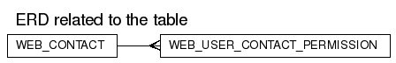

WEB_USER_CONTACT_PERMISSION
DDL scriptColumns
| Name | Type | Nullable | Default value | Comment |
|---|
| WEB_USER_ID | NUMBER(38) | N | | |
| EMAIL | CHAR(1) | Y | ('N')
| |
| MAIL | CHAR(1) | Y | ('N')
| |
| CALL | CHAR(1) | Y | ('N')
| |
| FAX | CHAR(1) | Y | ('N')
| |
| CREATED | DATE | N | (sysdate) | |
| MODIFIED | DATE | N | (sysdate) | |
Check Constraints:
| Constraint Name | Check Condition |
|---|
| WUCP_CALL_CK | call in ( 'Y' , 'N' ) |
| WUCP_EMAIL_CK | email in ( 'Y' , 'N' ) |
| WUCP_FAX_CK | fax in ( 'Y' , 'N' ) |
| WUCP_MAIL_CK | mail in ( 'Y' , 'N' ) |
Foreign Keys:
Options:
| Option | Settings |
|---|
| Tablespace | DATA_TBS |
| Index Organized | No |
| Generated by Oracle | No |
| Clustered | No |
| Nested | No |
| Temporary | No |
Triggers
WEB_USER_CP_TIMESTAMP
Legend: string keyword reserved word operator
CREATE TRIGGER
web_user_cp_timestamp
BEFORE INSERT OR UPDATE ON web_user_contact_permission
FOR EACH ROW
REFERENCING NEW AS NEW OLD AS OLD
BEGIN
:new.modified := sysdate;
END;